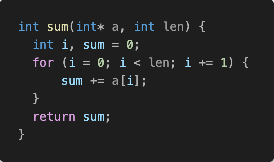

Online Compiler
Shell
No shell scripting required.
Pnut is an C to POSIX shell transpiler that can compile C programs into human-readable shell scripts. This unique approach ensures that your executables are highly portable, running seamlessly on any system with a POSIX-compliant shell. Say goodbye to the constraints of platform-specific binaries and embrace the future of software portability with pnut.
Write your script in plain-old C, no new language to learn.
Pnut's output is designed to be human-readable, making it easy to inspect, debug and maintain code.
Pnut's output runs on any POSIX-compliant shell, from bash to zsh, across all major operating systems including Linux, macOS, and Windows.